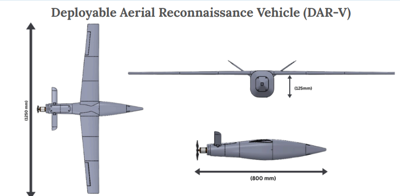
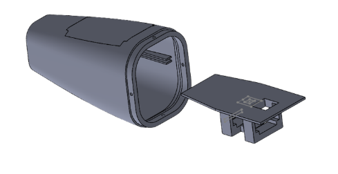
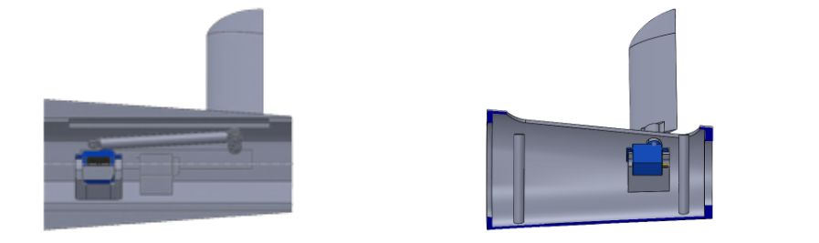
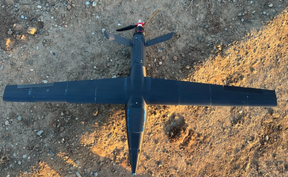
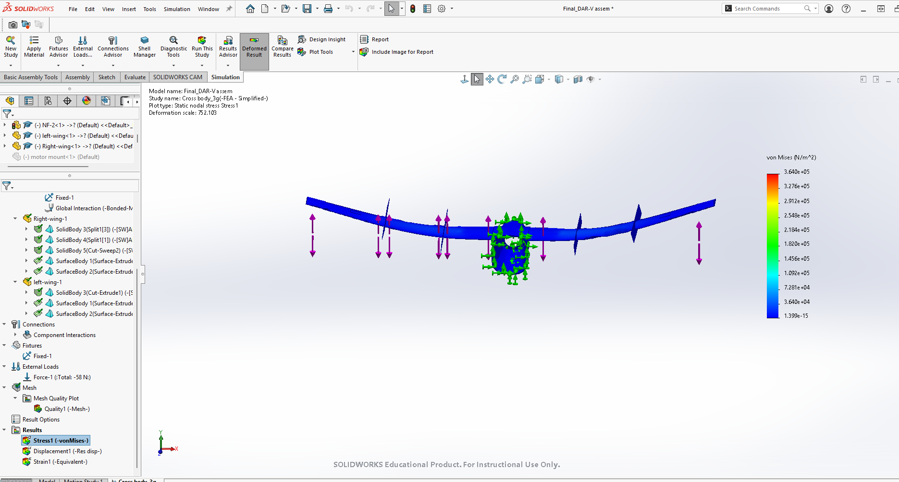

Fixed-wing UAV for autonomous flight, aerial reconnaissance, and Avionics integration · SolidWorks design · FEA failure analysis.

Developed as a small team of engineering students, DAR-V is a fixed-wing UAV designed for autonomous flight. I led the avionics integration, overseeing the setup of the flight controller, GPS, and telemetry communication systems to ensure stable and coordinated operation. The design goal was a sustainable flight time of 20 minutes within a 3-mile operational radius, using a 3D-printed modular airframe optimized for lightweight performance and field serviceability.
The project began with selecting the airfoil, where the team chose the Eppler 193 through CFD analysis for its high lift-to-drag ratio and stable speed performance. From there, I helped model the airframe and internal layout in SolidWorks, with a central core designed to hold the system's avionics:
On the avionics side, I configured the INAV flight controller to mesh with our PC application so we could see metrics in real time, and mapped the servo outputs and motor mixing for coordinated pitch, roll, and yaw control. Since the airframe was 3D printed, I also handled print orientation, wall thickness, and infill pattern to maximize strength and limit deformation under aerodynamic loading.

After multiple test flights, the UAV exhibited structural integrity issues concentrated at the wing-to-fuselage joint. Flight testing identified the primary structural weakness at the epoxy-bonded joint connecting the side fins to the central fuselage: under aerodynamic loading, this joint became a failure point leading to crashes. These findings drove redesigns of the rear control fins (a more rigid, direct-mount servo configuration) and the front avionics compartment (a drop-out access method for faster servicing).


To move from suspicion to evidence, I ran a static structural analysis on the airframe in SolidWorks Simulation, modeling a 3g flight-load case on the wings with the fuselage fixed. Applying a mesh control at the suspected wing-to-body connection resolved the stress accurately at that joint. The analysis confirmed the team's prior assumption: stress concentrates at the wing-to-fuselage joint — the same location the aircraft repeatedly failed in flight. Accounting for the epoxy bond and the anisotropy of the 3D-printed material at that joint explains why it became the fracture point.
